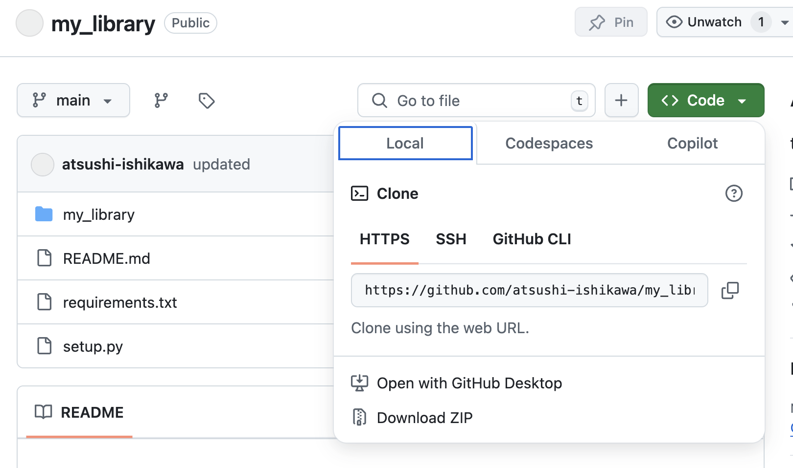

Making your own Python library
- In this page, we will learn how to make a Python library that can be downloaded with
pip. - The example here,
my_library, is a simple Python library that doubles the given value.
Making library
- The directory strucuture should be like the folllows:
my_library/ ├── my_library/ │ ├── __init__.py │ └── double.py ├── pyproject.toml └── README.md
1. Python module
- Create
double.pywith the following code:
import numpy as np
def double(x):
return np.array(x) * 2
2. __init__.py
- This can be an empty file, so can be made with
touch my_library/__init__.py
3. pyproject.toml
- This file contains the package information.
[build-system]
requires = ["setuptools"]
build-backend = "setuptools.build_meta"
[project]
name = "my_library"
version = "0.0.1"
dependencies = ["numpy==2.2.3"]
- You can relax the version dependence like "numpy>=2".
4. README.md
- You can write anything on this file. Empty is OK.
Upload to GitHub
- Create a GitHub repository and upload the code using the following commands:
git init
git add .
git commit -m "Initial commit"
git branch -M main
git remote add origin https://github.com/YOUR_USERNAME/my_library.git
git push -u origin main
- Or you can use browser to make GitHub repository.
- To push or download the file, the URL should be copied on browser.

Install the Library
- You can install the library directly from GitHub using pip:
pip install git+https://github.com/YOUR_USERNAME/my_library.git
Use your library
- You can use the library in a Python script or interactive environment as follows:
from my_library.double import double
print(double(5)) # Output: 10
print(double([1, 2, 3])) # Output: [ 2 4 6 ]
Additional information
Package dependence
- When you are using some other libraries in your own-library, these libraries should be installed.
- This dependence is controlled in either way:
install_requiresinsetup.pyrequirements.txt
- In the above example, we took 1. But if you want the exact match of your library version, method 2 is better.
- In this way, you prepare the file
requirements.txtin the library top directory, and write likenumpy scipy pandas - Then use
pip install -r requirements.txtwhen you download your own-written library.
Updating the Package
- You can update your code, upload to GitHub, and download via
pip. - Edit your code
- Then upload to the main branch:
git add; git commit -m "some message"; git push - Install again
pip install git+your_repository_url
Using your own library with other libraries
- Edit
pyproject.tomlto include like below:dependencies = [ "some_library @ git+https://github.com/yourname/some_library.git", ]